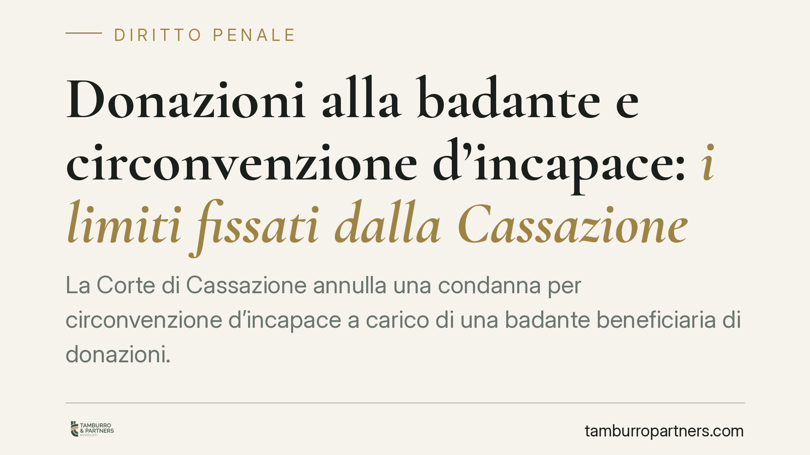

Donazioni alla badante e circonvenzione d'incapace: i limiti fissati dalla Cassazione
La Corte di Cassazione annulla una condanna per circonvenzione d'incapace a carico di una badante beneficiaria di donazioni. Il principio è netto: il morbo di Parkinson non equivale, di per sé, a incapacità psichica penalmente rilevante. Lo stato di deficit va accertato in concreto, al momento specifico degli atti di disposizione patrimoniale. Una pronuncia che ridisegna i confini probatori del reato previsto dall'art. 643 c.p.

Il caso
Un anziano affetto da morbo di Parkinson dispone, nel tempo, alcune donazioni in favore della propria badante. I familiari denunciano l'accaduto e la Corte d'Appello di Firenze condanna la donna per circonvenzione d'incapace. La Cassazione, Sezione Seconda penale, con la sentenza n. 10235/2026, annulla quella condanna.
Il punto di frizione è classico: la gratitudine di una persona anziana e malata verso chi la assiste può trasformarsi in reato? E a quali condizioni?
Inquadramento normativo
L'art. 643 del codice penale punisce chi, per procurare a sé o ad altri un profitto, abusando dei bisogni, delle passioni o dell'inesperienza di una persona in stato di infermità o deficienza psichica, la induce a compiere un atto che produce effetti giuridici dannosi per lei o per altri.
La norma richiede quindi la compresenza di tre elementi: uno stato di minorata capacità psichica della vittima, una condotta di induzione da parte dell'agente, e un atto dannoso con effetti giuridici. Manca anche uno solo di questi presupposti, manca il reato.
Il nodo interpretativo riguarda la nozione di deficienza psichica. La giurisprudenza consolidata non la fa coincidere con l'incapacità di intendere e di volere richiesta in altri contesti: basta una condizione di minorazione, anche parziale, che renda il soggetto più facilmente suggestionabile. Ma questa condizione deve esistere ed essere provata, non presunta.
Il principio della Cassazione
La Seconda Sezione corregge un automatismo pericoloso. Una diagnosi clinica — nel caso, il morbo di Parkinson — non si traduce automaticamente in deficienza psichica rilevante ai fini dell'art. 643 c.p.
Il Parkinson è una patologia neurodegenerativa che colpisce prevalentemente la sfera motoria. Può accompagnarsi a decadimento cognitivo, ma non necessariamente, e comunque con gradi e tempi variabili da paziente a paziente. Dedurre dalla sola diagnosi uno stato di vulnerabilità psichica significa saltare un passaggio probatorio essenziale.
La Corte chiarisce che lo stato mentale della presunta vittima deve essere accertato in concreto e al momento degli atti dispositivi. Non basta provare che la persona fosse malata: occorre dimostrare che, quando ha firmato quella specifica donazione, la sua capacità di autodeterminarsi fosse effettivamente compromessa in modo da renderla manipolabile.
È una differenza sostanziale. Spostare la prova dal piano della diagnosi astratta a quello della condizione puntuale restringe lo spazio delle condanne fondate su sillogismi affrettati.
Implicazioni pratiche
La pronuncia incide su due fronti.
Per chi accusa — familiari, pubblico ministero — l'asticella probatoria si alza. Non è sufficiente esibire certificati medici o testimoniare il progressivo declino dell'anziano. Serve ricostruire lo stato psichico al tempo di ciascun atto, spesso attraverso perizie mirate e documentazione contestuale.
Per chi si difende — l'assistente, il beneficiario di una liberalità — la decisione offre un argomento solido contro le contestazioni che partono dalla sola etichetta clinica. La gratitudine verso chi presta cura resta, in linea di principio, un movente legittimo di una donazione.
Resta ferma la necessità di prudenza. Le liberalità in favore di chi assiste una persona fragile sono terreno fertile per contenziosi, anche civili (impugnazione della donazione, azioni degli eredi). Una cosa è escludere il reato, altra è mettere l'atto al riparo da ogni contestazione.
Cosa fare in concreto
- Documentate lo stato di salute della persona che dispone l'atto, idealmente con una valutazione medica contestuale alla donazione, non postuma.
- Formalizzate le liberalità rilevanti davanti al notaio, che può attestare la lucidità del disponente al momento dell'atto.
- Conservate traccia delle ragioni della donazione: la gratitudine va contestualizzata, non lasciata all'interpretazione successiva di terzi.
- Se siete eredi e sospettate un abuso, raccogliete elementi riferiti al momento degli atti, non generiche prove della malattia.
- Consigliamo di valutare preventivamente la posizione con un legale quando l'importo o la frequenza delle donazioni è significativo rispetto al patrimonio.
Conclusione
La sentenza n. 10235/2026 riafferma un principio di garanzia: il reato di circonvenzione d'incapace non si costruisce per presunzioni. La malattia, da sola, non basta. Occorre la prova di una vulnerabilità effettiva e attuale. Un confine netto tra la tutela delle persone fragili e il rispetto della loro libertà di disporre dei propri beni.
Contributo informativo a cura di Tamburro & Partners - Avv. Giuseppe Tamburro. Non costituisce parere legale.
Ogni condominio ha una storia a sé.
Se gestisci un'amministrazione e vuoi un confronto su una specifica questione condominiale, scrivi allo studio. Ti rispondiamo entro un giorno lavorativo.